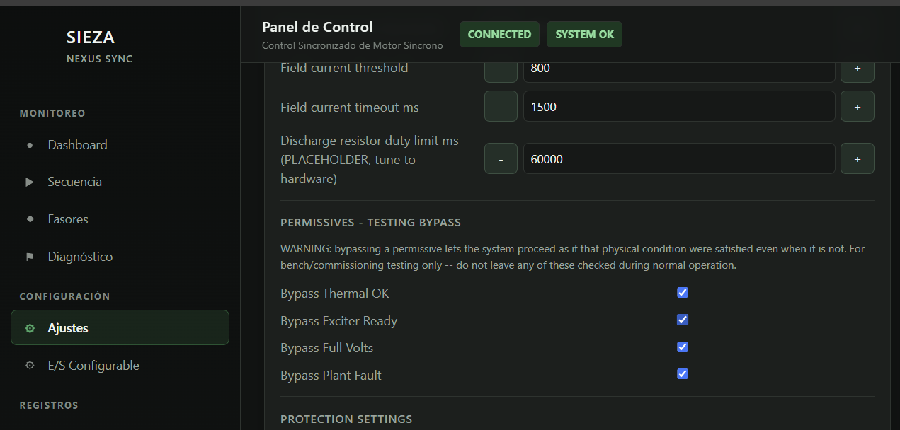
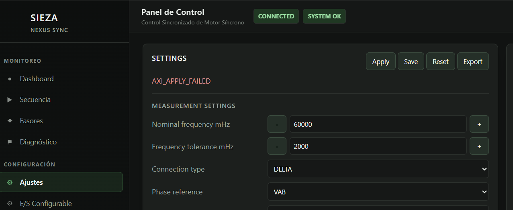

Proposito
La Raspberry Pi solo simula estados digitales. No genera DAC, voltajes de motor, corrientes de motor, corriente de campo ni senales analogicas para el ADS. Los voltajes y corrientes deben inyectarse externamente al ADS/PZ.
Arquitectura
Raspberry Pi GPIO -> estados digitales hacia PZ JM2 PZ JM1/JM2 -> salidas digitales hacia Raspberry Pi Fuente externa / generador -> voltajes y corrientes hacia ADS/PZ
Advertencias electricas
- Usar 3.3 V unicamente.
- Conectar GND comun primero.
- No conectar 5 V a GPIO Raspberry ni a pines PZ.
- No unir salida contra salida.
- Usar resistencia serie de 220 ohm a 1 kohm en cada GPIO.
- Usar optoacopladores si hay ruido, cables largos o hardware de potencia externo.
- No conectar motor, SCR de potencia ni campo durante la primera prueba digital.
- Las senales SCR gate son logica de prueba, no disparo directo de potencia.
Raspberry -> PZ
| Funcion | Senal Raspberry | GPIO BCM | Pin Raspberry | Senal PZ | Pin PZ | Package | Inicial |
|---|---|---|---|---|---|---|---|
| Termico OK | RPI_THERMAL_OK_OUT | 5 | 29 | thermal_ok_in | JM2-11 | G15 | 1 |
| Excitador listo | RPI_EXCITER_READY_OUT | 6 | 31 | exciter_ready | JM2-13 | K16 | 1 |
| Falla de planta | RPI_PLANT_FAULT_OUT | 13 | 33 | plant_fault | JM2-19 | N16 | 0 |
| Voltaje pleno | RPI_FULL_VOLTS_OUT | 7 | 26 | full_volts | JM2-9 | H15 | 0 |
| Corriente campo | RPI_FIELD_CURRENT_PRESENT_OUT | 26 | 37 | field_current_present | JM2-15 | J16 | 0 |
| Motor sincronizado | RPI_MOTOR_SYNCHRONIZED_OUT | 16 | 36 | motor_synchronized | JM2-17 | N15 | 0 |
| Corriente descarga | RPI_DISCHARGE_CURRENT_PRESENT_OUT | 20 | 38 | discharge_current_present | JM2-5 | G19 | 0 |
| Pulso descarga | RPI_DISCHARGE_EXTINCTION_PULSE_OUT | 21 | 40 | discharge_extinction_pulse | JM2-7 | G20 | 0 |
Si la API de la PZ muestra fault_code=0, fault_name=NONE, medicion ADS valida y aun asi queda en fsm_state=INIT con fault_active=true, es el bug conocido de polaridad de permisivos (no persiste el fix entre reinicios de la PZ -- hay que repetirlo cada vez).
Metodo elegido para las pruebas de este HIL: en la web de la PZ, menu lateral CONFIGURACION -> Ajustes, bajar hasta PERMISSIVES - TESTING BYPASS y tildar Bypass Plant Fault, despues Apply. Por RTL esto fuerza plant_fault_eff=0 directamente (pz_sync_control_axi_top.v:1177), sin importar la polaridad de permissive_active_high_mask. Solo para banco/HIL -- la propia pantalla advierte no dejarlo tildado en operacion real con motor conectado.

Los botones Apply / Save / Reset / Export estan arriba de la misma pantalla -- ahi tambien aparece en rojo el mismo error AXI_APPLY_FAILED que reporta la API por curl (bug conocido: el valor SI queda aplicado en vivo, pero nunca se guarda en la SD, hay que repetir el paso despues de cada power-cycle):

Alternativa para pruebas que deban parecerse a la operacion real (deja las protecciones activas, corrige los 5 campos de permisivos en vez de bypasear plant_fault):
curl.exe -u operator:SIE2 -H "Content-Type: application/json" -X POST --data-raw "{\"permissive_enable_mask\":255,\"permissive_required_start_mask\":131,\"permissive_required_run_mask\":229,\"permissive_active_high_mask\":255,\"permissive_bypass_mask\":0}" http://192.168.1.50/api/settings/save
Si la Raspberry no tiene red hacia la PZ (sitio remoto tipico), el mismo fix de 3 de los 5 campos (los otros 2 no los usa ninguna logica real, confirmado por RTL) se puede hacer sin red por consola serial: param set 13 255, param set 14 255, param set 15 0, param apply. Detalle completo en docs/rpi_digital_hil_ponovo_running_procedure.md, seccion "Preparativos para un sitio remoto".
Si la PZ responde ping pero el puerto HTTP 80 queda cerrado despues de un intento de API, esperar 30 s. Si no regresa, hacer power-cycle de la PZ o usar consola UART.
PZ -> Raspberry
| Funcion | Senal PZ | Pin PZ | Package | Senal Raspberry | GPIO BCM | Pin Raspberry | Activo |
|---|---|---|---|---|---|---|---|
| Arranque/run | motor_run | JM1-15 | G18 | PZ_MOTOR_RUN_IN | 17 | 11 | HIGH |
| 56K listo | relay_56k | JM1-16 | A20 | PZ_RELAY_56K_IN | 27 | 13 | HIGH |
| Campo habilitado | field_enable | JM1-17 | D19 | PZ_FIELD_ENABLE_IN | 22 | 15 | HIGH |
| FAX running | relay_fax | JM1-18 | C20 | PZ_RELAY_FAX_IN | 23 | 16 | HIGH |
| Falla/trip | fault_out | JM1-23 | H18 | PZ_FAULT_OUT_IN | 24 | 18 | HIGH |
| SCR enable | scr_enable | JM1-25 | K17 | PZ_SCR_ENABLE_IN | 25 | 22 | HIGH |
| FWT | fwt_cmd | JM1-27 | K18 | PZ_FWT_CMD_IN | 12 | 32 | HIGH |
| DST | dst_cmd | JM1-29 | L16 | PZ_DST_CMD_IN | 18 | 12 | HIGH |
Monitoreo opcional
Estos pines son opcionales y quedan deshabilitados durante la prueba principal para evitar confundir estados de PZ con pulsos SCR.
| Senal PZ | Pin PZ | Package | GPIO BCM | Pin Raspberry | Nota |
|---|---|---|---|---|---|
field_pwm | JM1-19 | D20 | null | - | Monitoreo opcional |
sync_pulse | JM1-21 | J18 | null | - | Monitoreo opcional |
scr_gate_g1 | JM2-21 | T16 | null | - | Monitoreo opcional |
scr_gate_g2 | JM2-23 | U17 | null | - | Monitoreo opcional |
scr_gate_g3 | JM2-25 | P14 | null | - | Monitoreo opcional |
scr_gate_g4 | JM2-27 | R14 | null | - | Monitoreo opcional |
scr_gate_g5 | JM2-29 | T11 | null | - | Monitoreo opcional |
scr_gate_g6 | JM2-31 | T10 | null | - | Monitoreo opcional |
Estado READY
READY real en Nexus Sync requiere medicion analogica valida desde ADS/Ponovo. La Raspberry solo aporta los permisivos digitales.
measurement_online = signal_present && freq_valid && freq_ok thermal_ok_in = 1 exciter_ready = 1 plant_fault = 0 fault_latched = 0
Si los permisivos digitales estan correctos pero relay_56k sigue en 0, revisar primero voltajes/frecuencia ADS, fault latched y configuracion de medicion. No usar full_volts para entrar a READY; full_volts se activa despues de START.
Reposo Digital
thermal_ok_in = 1 exciter_ready = 1 plant_fault = 0 full_volts = 0 field_current_present = 0 motor_synchronized = 0 discharge_current_present = 0 discharge_extinction_pulse = 0
Procedimiento
- Apagar PZ y Raspberry Pi.
- Conectar GND comun.
- Cablear Raspberry -> PZ.
- Cablear PZ -> Raspberry.
- Inyectar externamente voltajes/corrientes al ADS.
- Encender Raspberry Pi.
- Abrir el acceso directo del escritorio para levantar el servicio web.
- Desde la computadora abrir
http://192.168.1.120:8080. - Confirmar las advertencias de seguridad.
- Presionar
ARMARy despuesREADYpara aplicar reposo digital:thermal_ok_in=1,exciter_ready=1,plant_fault=0. - Encender Ponovo V1/V2/V3 a 60 Hz, balanceados, con corrientes en 0 A.
- Esperar que la PZ/HMI muestre voltaje y frecuencia validos.
- Confirmar en la web que
relay_56k=1; eso indica READY real. - Solo despues de
relay_56k=1, dar START desde HMI/API. - Solo despues de ver
motor_run=1, activarfull_volts. - Usar SAFE_STOP al finalizar.
Procedimiento con Ponovo para RUNNING
La Ponovo debe inyectar las senales analogicas hacia el acondicionamiento/ADS/PZ. La Raspberry solo entrega los estados digitales.
| ADS/PZ | Nombre | Ponovo sugerido | Uso |
|---|---|---|---|
| CH0 | Vab | V1 | Voltaje, frecuencia, PLL/ZC |
| CH1 | Vbc | V2 | Voltaje, secuencia |
| CH2 | Vca | V3 | Voltaje, secuencia |
| CH3 | Ia | I1 | Corriente fase A |
| CH4 | Ib | I2 | Corriente fase B |
| CH5 | Ic | I3 | Corriente fase C |
| CH6 | FieldCurrent | Aux/I4 | Corriente de campo |
| CH7 | DischargeCurrent | Aux/I5 | Corriente de descarga |
Secuencia corta corregida: encender Vab/Vbc/Vca balanceados a 60 Hz, confirmar medicion valida en PZ/HMI, aplicar ARMAR y READY en la web, esperar relay_56k=1, dar START en PZ, esperar motor_run=1, activar full_volts, activar discharge_current_present y el tren discharge_extinction_pulse, esperar field_enable, activar field_current_present, confirmar sincronismo analogico y activar motor_synchronized. El detalle completo esta en docs/rpi_digital_hil_ponovo_running_procedure.md.
Si No Entra READY
| Punto | Esperado | Accion |
|---|---|---|
thermal_ok_in | 1 | Revisar GPIO5/pin 29 hacia JM2-11/G15. |
exciter_ready | 1 | Revisar GPIO6/pin 31 hacia JM2-13/K16. |
plant_fault | 0 | Dejar OFF; revisar GPIO13/pin 33 hacia JM2-19/N16. |
full_volts | 0 | Debe estar OFF antes de START; ahora usa GPIO7/pin 26 hacia JM2-9/H15. |
fault_out | 0 | Si esta 1, hacer reset/ack fault desde HMI/API y revisar codigo de falla. |
relay_56k | 1 | Si queda 0, READY no esta declarado por la PZ. |
| Ponovo V1/V2/V3 | ON | Sin voltaje ADS valido no hay measurement_online. |
| Frecuencia | 60 Hz estable | Revisar tolerancia/configuracion de frecuencia si el proyecto usa otro nominal. |
| Secuencia | positiva | V1/V2/V3 deben corresponder a Vab/Vbc/Vca con angulos 0, -120, +120. |
Comandos
/home/pi/NexusHIL/scripts/run_rpi_digital_hil_web.sh python3 /home/pi/NexusHIL/tools/rpi_digital_hil/nexus_sync_rpi_digital_hil_web.py --config /home/pi/NexusHIL/rpi_digital_hil_config.json --host 0.0.0.0 --port 8080 python3 /home/pi/NexusHIL/tools/rpi_digital_hil/nexus_sync_rpi_digital_hil.py --config /home/pi/NexusHIL/rpi_digital_hil_config.json --mode manual python3 /home/pi/NexusHIL/tools/rpi_digital_hil/nexus_sync_rpi_digital_hil.py --config /home/pi/NexusHIL/rpi_digital_hil_config.json --mode auto python3 /home/pi/NexusHIL/tools/rpi_digital_hil/nexus_sync_rpi_digital_hil.py --config /home/pi/NexusHIL/rpi_digital_hil_config.json --mode monitor
La interfaz web se abre desde la computadora en http://192.168.1.120:8080. Incluye ARMAR, READY, SAFE_STOP, botones para salidas, indicadores de entradas y tren discharge_extinction_pulse PULSE ON/OFF. La frecuencia inicial se configura en timing_ms.discharge_pulse_hz dentro de rpi_digital_hil_config.json.
Criterios PASS
- PZ detecta
thermal_ok_in=1,exciter_ready=1yplant_fault=0. - Raspberry detecta
motor_run=1cuando PZ ordena arranque. - Raspberry activa
full_volts=1solo despues de confirmar la inyeccion analogica externa. - Raspberry detecta
field_enable=1. - Raspberry activa
field_current_present=1. - Raspberry activa
motor_synchronized=1solo con confirmacion manual. - PZ llega a RUNNING o al estado esperado.
- SAFE_STOP limpia salidas no seguras.
Criterios FAIL
- PZ no detecta
thermal_ok_inoexciter_ready. - PZ detecta
plant_faultinesperado. - Raspberry no detecta
motor_run. fault_outse activa inesperadamente.- Alguna senal usa 5 V.
- Alguna salida esta conectada contra otra salida.
Despliegue en una Raspberry Pi remota (mismo usuario/password: pi / pi)
Esta Raspberry (192.168.1.120) y una unidad remota con la misma estructura de sistema operativo pueden compartir el mismo repositorio. El repo vive en https://github.com/zamoranodizaPi/NexusHIL (rama main), publico, no requiere credencial para clonar/actualizar.
Primera instalacion en la Raspberry remota
# 1. Conectarse por SSH (mismo usuario y password que esta Raspberry: pi / pi) ssh pi@<IP_RASPBERRY_REMOTA> # 2. Clonar el repositorio git clone https://github.com/zamoranodizaPi/NexusHIL.git /home/pi/NexusHIL # 3. Instalar y arrancar el servicio systemd (queda activo al boot) bash /home/pi/NexusHIL/scripts/install_rpi_systemd_service.sh # 4. Verificar que quedo activo systemctl status nexus-hil-web.service --no-pager # 5. Abrir desde una computadora en la misma red que la Raspberry remota # http://<IP_RASPBERRY_REMOTA>:8080
Actualizar una instalacion existente (traer cambios nuevos)
ssh pi@<IP_RASPBERRY_REMOTA> "cd /home/pi/NexusHIL && git pull origin main && sudo systemctl restart nexus-hil-web.service && systemctl is-active nexus-hil-web.service"
Opcional: acceso directo de escritorio (para arranque manual sin systemd)
bash /home/pi/NexusHIL/scripts/install_rpi_desktop_shortcut.sh
Notas: el script de systemd corre el servicio como usuario pi (no root), necesita que ese usuario tenga acceso al grupo gpio (viene asi por defecto en Raspberry Pi OS). Si al conectar por SSH la primera vez pide confirmar la huella del host, aceptar (es la primera conexion a esa Raspberry en particular). El puerto queda fijo en 8080 salvo que se pase NEXUS_HIL_WEB_PORT=<otro puerto> antes de correr el script de instalacion.